Titles¶
Contents
Titles are text elements that can be added to the timeline and appear over the top of other clips. Titles are created in the The Project Bin and then dragged to the timeline like other video clips.
If you want titles to overlay other footage, you put title clips on video track 1 and have the other footage on video track 2. You also need to retain the affine transition that is automatically added to the title clips if you want the footage visible underneath.
To create a title, choose from the Project Menu or from the Right-Click menu in the The Project Bin
How to Save a Title¶
Open the title in the The Project Bin by double-clicking it or right-click then choose .
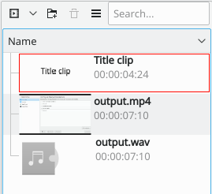{kind=link}
Click the button on the tool bar
Title Editor toolbar when title editor is wide enough for the whole toolbar to display. The toolbar items are: Selection Tool, ‘Add Text*,**Add Rectangle**,**Add Image**,**Open Document**,**Save As** |
or select from the toolbar overflow menu which can be found under the button on the toolbar - see picture.
Title Editor toolbar when title editor is not wide enough for the whole toolbar to display. The toolbar items that do not fit can be accessed from the button that appears at the end of the toolbar. |
Choose a save location within your project.
The titles are saved as .kdenlivetitle type documents.
How to Load a Title¶
Choose from the**Add Clip*’ drop down (see picture)
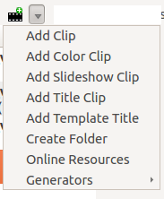{kind=link}
Click the Open Document button on the Title Clip editor toolbar or choose Open document from the menu and load up a title saved earlier.
How to edit an existing title¶
Right-click the title clip in the Project Tree and select .
Template Titles - User-Defined¶
Template Titles allow you to create a template for other titles in your project. You create the template title with the settings that all the titles in the project should have and then base subsequent titles on the template. If you decide to change the look of your titles, you only need change the template title and the titles based on this template will automatically update to reflect any formatting changes you made to the template title.
To create a template title
Choose from the drop down and create a title with the text %s in it and formatted how you desire it. Save this title as described above.
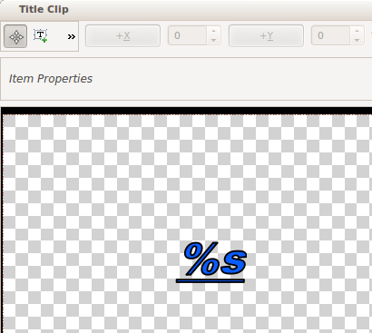{kind=link}
To use the template title
Choose from the drop down and choose the title with the %s in it that you just saved.
Right-click this clip in the Project Tree and select ,
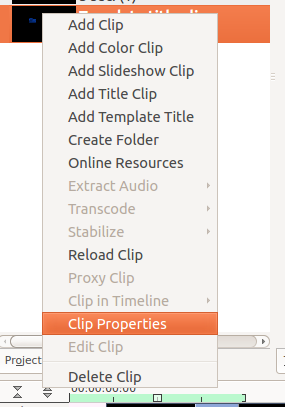{kind=link}
Enter the text that this title should display into the text field in the dialog that appears.
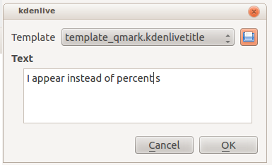{kind=link}
Drag the title to the timeline.
The %s in the template will be replaced with the text that you enter in the .
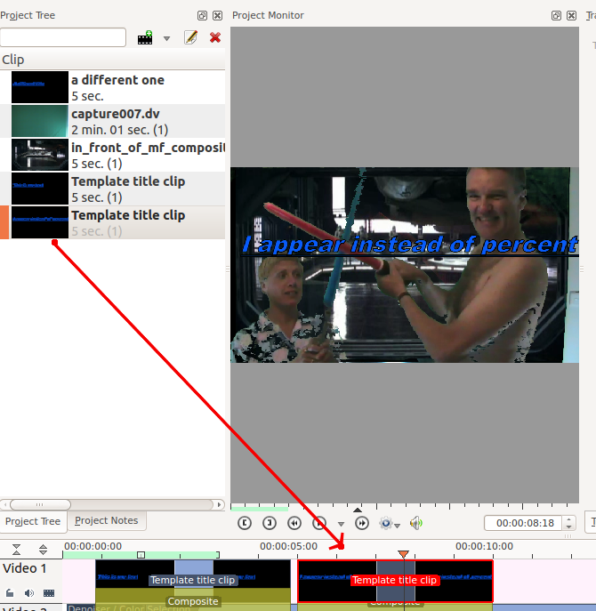{kind=link}
A known issue with template titles is that text centering does not work correctly for text replacing the %s - see this forum post.
Template Titles - Built In¶
Kdenlive has some built-in title templates that can be accessed from the drop-down list found on the bottom of the Title Clip window - see below.
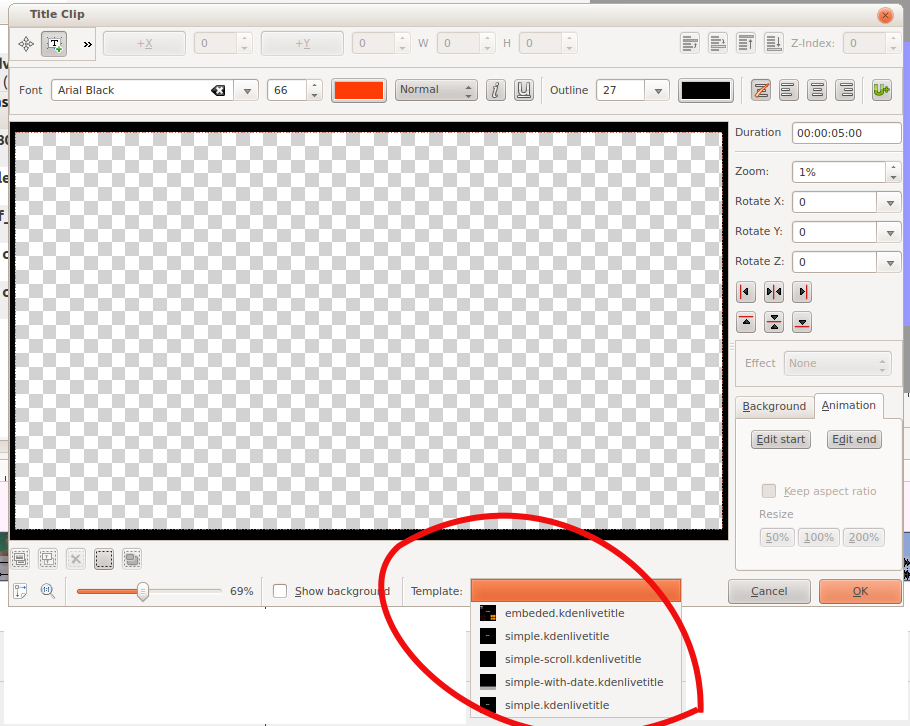{kind=link}
To install more built-in title templates choose Download New Title Templates from the menu.
The .kdenlivetitle files that supply these templates are installed to /usr/share/kde4/apps/kdenlive/titles/
Import an Image into the title¶
On the Toolbar overflow menu (>>) shown in the picture below, the second menu item - (labeled only with Alt + I in ver 0.9.2 - fixed in ver 0.9.4) - is the Add Image Button. Selecting this brings up a file chooser where you can choose an image to be inserted into your title.
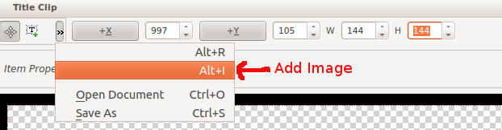Draw Rectangle Toolbar Item¶
The 1st menu item shown in the picture above - (labeled only with Alt + R in ver 0.9.2 - fixed in ver 0.9.4) - is the Add Rectangle button. After selecting this, drag the mouse to draw a rectangle. Use the rectangle toolbar (shown below) to change the fill color, border color and border width of the rectangle.
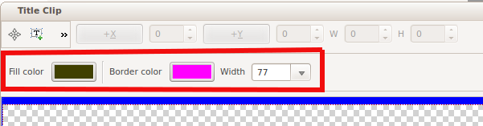The rectangles can be placed behind text by selecting them and the changing the Z-index (top right corner) to a lower value.

To make the title scroll vertically¶
Put a long title onto the title window. Zoom out so you can see it all. The text should run off the top (or bottom) of the viewable area.
Select the Animation tab and click Edit start viewport. Now drag the start rectangle to above the viewable area.
Select Edit end viewport and drag the end rectangle to below the viewable area.
Click OK and preview the scrolling title.
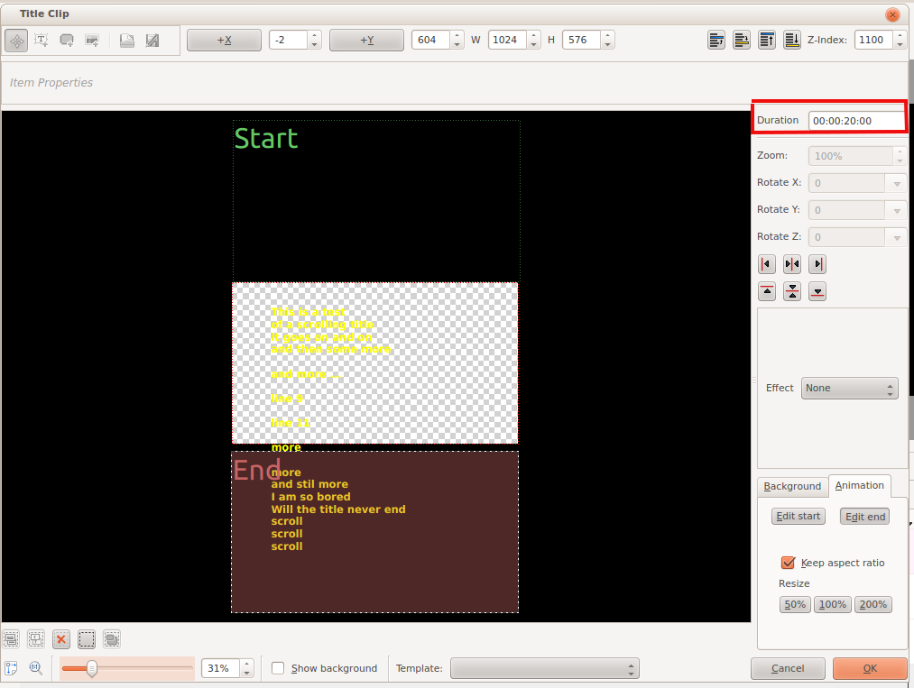The text in the above title scrolls up the screen. It is as if the camera starts on the “start rectangle” and then pans down to the “end rectangle”
To make the text scroll faster, change the duration field highlighted in red in the image above to a smaller value. To make the text scroll slower, change the duration to a larger value.
Note: changing the length of the title clip on the timeline does not change the scrolling speed. If the length of the clip on the timeline is longer than the duration specified in the title editor, the titles will pause on the screen between the time the title’s duration expires until the end of the clip.
If the length of the clip on the timeline is shorter than the duration specified in the title editor, the scrolling will not complete before the title clip finishes.
Note: the above description of title behaviour with respect to duration only applies to titles that don’t get edited after they have been placed on the timeline. If you expand the length of a title clip on the timeline and then edit the title (by double-clicking it in the Project Tree), its apparent duration will become the length that it currently has on the timeline (i.e., the scrolling will not pause at the end anymore) but the duration displayed in the title editor will not have changed.
To make the title scroll Horizontally¶
Use the instructions for vertical scrolling - just put the start and stop rectangles off to the sides of the screen rather than the top and bottom
How to fade titles in and/or out¶
To make titles fade in and out, you modify the transition which gets automatically added between the title and the track below. The modifications consist of adding keyframes into the transition and adjusting the opacity of the transitions at these keyframes. In version 0.9.3 it is an Affine Transition transition that is automatically added between the title and the track below. In ver 0.9.2 it is a Composite Transition transition.
In the image below we have four keyframes (labeled 1 to 4). The first keyframe is the one currently displayed and we can see that the opacity on this keyframe is zero. The opacity at keyframes 2 and 3 is 100%. The opacity at the 4th keyframe is zero percent. The overall effect is that the title fades in between keyframe 1 and keyframe 2. And then it fades out between keyframe 3 and keyframe 4 .
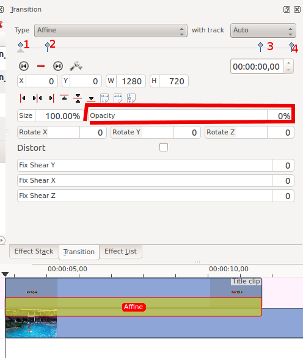How to fade in more than one title sequentially¶
To create a title sequence like this …
you put three titles on three different tracks but you make all three affine transitions go to the same empty video track (instead of the tracks directly below them, which is the default). See timeline screenshot below.
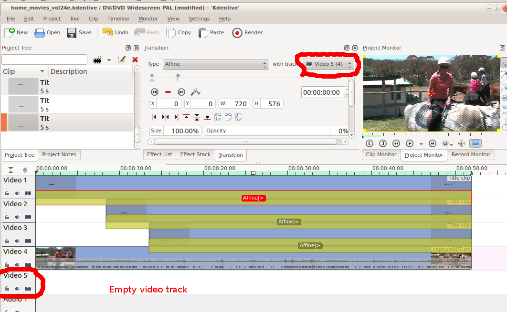FAQ¶
Q: How to duplicate a title clip to modify it slightly.
A: You can save a copy of the title (see Titles) and then create a new title based on that saved version as described Titles, Or you could use the Titles functionality to base the two slightly different titles on the one template.
Contents: